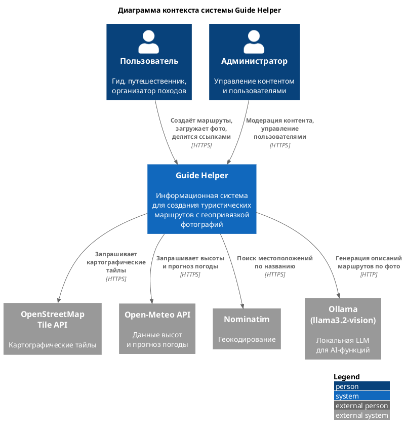
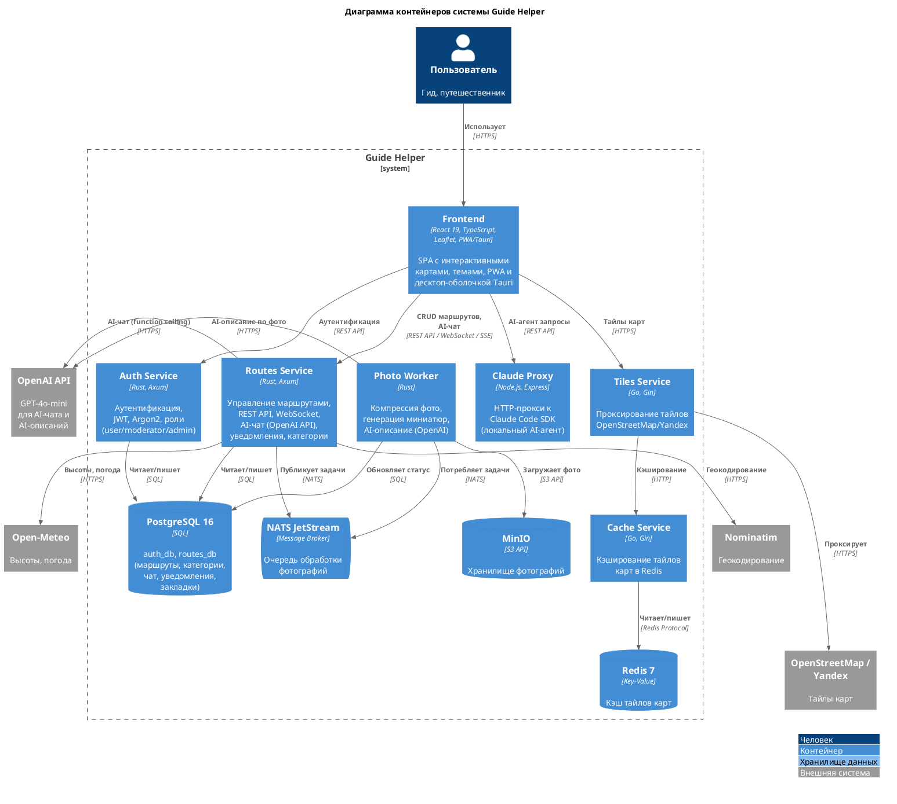
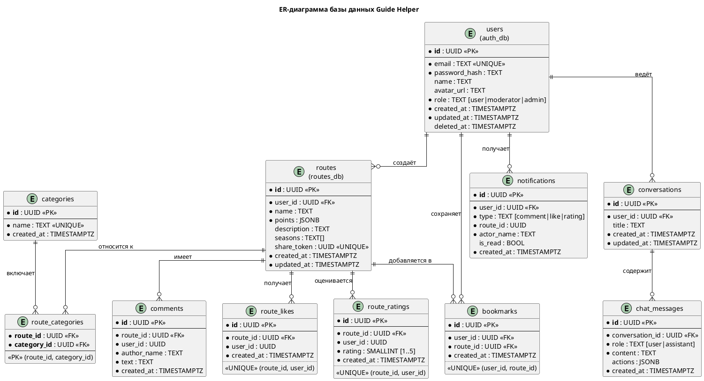
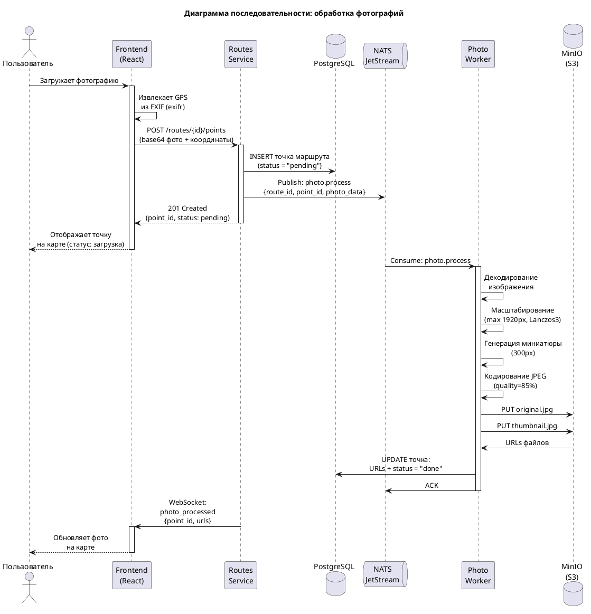
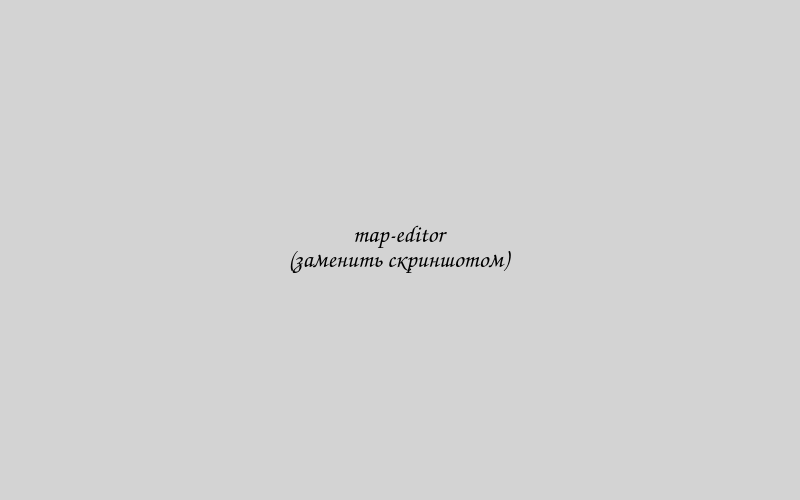
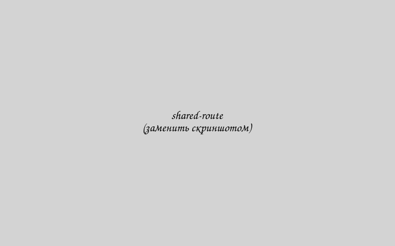

Разработка информационной системы для создания и публикации туристических маршрутов с геопривязанными фотографиями
Guide Helper объединяет карту, маршрут, фотографии, публикацию, каталог и интеллектуальные сервисы в одной платформе.
Проблема не в отсутствии карт, а в разрыве рабочего контура
Гид или инструктор собирает один маршрут сразу в нескольких инструментах: карта, трек, фотографии, мессенджер, документы для участников.
- фотографии не привязаны к конкретным точкам маршрута;
- контекст маршрута теряется при передаче ссылки или GPX-файла;
- подготовка одного маршрута занимает часы ручной сборки и пояснений;
- существующие сервисы не дают единый контур: создание → обогащение → публикация → повторное использование.
До Guide Helper
Карта, папка с фото, GPX, мессенджер и PDF живут отдельно и дублируют друг друга.
Потребность целевой аудитории
Не просто показать трек, а передать «живой» маршрут: фото точек, описание, сложность, контекст, ссылку и возможность вернуться к маршруту позже.
Цель работы и задачи, которые должны быть закрыты реализацией
Цель: разработать информационную систему Guide Helper для создания и публикации туристических маршрутов с геопривязанными фотографиями.
Аналитический блок
- изучить предметную область цифрового туризма;
- провести сравнительный анализ существующих аналогов;
- сформулировать функциональные и нефункциональные требования.
Проектирование и реализация
- спроектировать архитектуру и схему базы данных;
- реализовать серверную часть;
- разработать клиентские интерфейсы;
- реализовать обработку геопривязанных фотографий;
- интегрировать интеллектуальные и интерактивные функции.
Внедрение и сопровождение
- настроить инфраструктуру развёртывания и сопровождения;
- провести тестирование, анализ производительности и экономическую оценку.
Предметная область, роли пользователей и результаты сравнения аналогов
Гид / инструктор
Создаёт маршрут, добавляет точки, прикрепляет фотографии и публикует ссылку для участников.
Турист
Находит маршрут, просматривает фото и описание точек, оставляет рейтинг и комментарии.
Администратор
Управляет пользователями, категориями, контентом и общей статистикой платформы.
По итогам анализа аналогов установлено, что существующие решения закрывают отдельные сценарии маршрутизации или спортивного трекинга, но не дают единую платформу для фотомаршрутов с публикацией, визуальным контекстом и AI-помощью.
| Сервис | Геопривязанные фото | Публичный шеринг | Единый контур |
|---|---|---|---|
| Wikiloc | частично | да | нет |
| Google My Maps | частично | да | нет |
| Strava | нет | ограниченно | нет |
| Komoot | частично | да | нет |
| AllTrails | частично | да | нет |
| Guide Helper | да | да | да |
В ВКР сравнение выполнено по 18 критериям; на слайде показан только итог по самым показательным блокам.
Система формализована через требования и роли, а не только через набор экранов
Ключевые группы FR
Ключевые NFR
- время отклика API по 95-му перцентилю не выше 500 мс;
- обработка фотографии не дольше 10 секунд;
- двуязычный интерфейс;
- кроссплатформенность: PWA и desktop-оболочка;
- работа в контейнерной инфраструктуре и развёртывание в Kubernetes.
Guide Helper спроектирован как микросервисная система с внешними геосервисами и AI-провайдерами

Что показывает диаграмма контекста
- в центре находится единая система Guide Helper;
- пользователи взаимодействуют через клиентское приложение;
- внешние поставщики закрывают карты, геокодинг, маршрутизацию, погоду и LLM API;
- маршруты, фото и AI не смешиваются в монолите.
Контейнерная схема и модель данных поддерживают полный жизненный цикл маршрута


Ключевые сущности
- маршрут и массив его точек;
- категории, комментарии, лайки, рейтинги, закладки;
- история чатов и уведомлений;
- JSONB для гибкого хранения точки маршрута и фото-данных.
Серверная часть реализует аутентификацию, маршруты и асинхронную обработку фотографий
Основные backend-компоненты
- auth-service: JWT access/refresh, роли, middleware авторизации;
- routes-service: CRUD маршрутов, публикация, каталог, социальные функции, аналитика;
- photo-worker: обработка JPEG/EXIF, генерация миниатюр, публикация событий;
- sqlx + PostgreSQL: типобезопасный доступ к данным;
- NATS JetStream + MinIO: очередь задач и объектное хранилище.

Клиентские интерфейсы закрывают создание, публикацию, каталог и повторное использование маршрута


- React PWA с интерактивной картой Leaflet, профилем высот и погодным блоком;
- публичный просмотр маршрута по ссылке без обязательной глубокой онбординговой цепочки;
- профиль пользователя с управлением версиями маршрута, экспортом и шарингом;
- desktop-оболочка на Tauri поверх той же клиентской логики.
Система не ограничивается треком: она добавляет контекст, автоматизацию и интерактивность
AI-ассистент
Диалоговый интерфейс с tool use для геокодинга, поиска маршрутов, получения деталей маршрута и прогноза погоды.
AI-описание маршрута
Генерация краткого описания маршрута на основе привязанных фотографий и собранного контекста.
Интерактивный шеринг
Публичная ссылка, QR-код, встраиваемый iframe-виджет и повторное открытие маршрута без потери контекста.
Контекст прохождения
Погода, сезонность, исторический таймлайн и аналитические метрики маршрута внутри интерфейса.
Разработка доведена до реального стенда: локальная среда, CI/CD и Kubernetes
Качество проверяется не только на глаз: есть тесты, критические пути и матрицы трассируемости
Что проверялось
- доменные модели и бизнес-логика;
- JWT, роли и middleware авторизации;
- обработка фотографий и WebSocket-уведомления;
- каталог, социальные функции, AI-чат и rate limiting.
Как зафиксирован результат
- программа и методика испытаний в приложении Б;
- таблицы критического пути для трёх ролей;
- матрица «задача → раздел → результат»;
- матрица «требование → реализация → проверка → доказательство».
Производительность и экономическая оценка подтверждают практическую состоятельность решения
Трудоёмкость и себестоимость
- 570 человеко-часов суммарной трудоёмкости;
- 1 897 508 руб. расчётная себестоимость разработки;
- 79 500 руб./год эксплуатационные расходы на инфраструктуру.
Практический эффект
- подготовка маршрута сокращается примерно с 3 часов до 30 минут;
- ориентировочная экономия времени: 2,5 часа на один маршрут;
- система пригодна как рабочий инструмент и как основа для дальнейшего развития продукта.
Практический результат: не прототип на бумаге, а развернутый контур создания и публикации маршрутов
Функциональный baseline
Реализованы создание, публикация, просмотр, каталог, профиль автора, социальные функции, аналитика и AI-контур.
Развёртывание
Система работает как демонстрационный стенд в Kubernetes и сопровождается CI/CD-пайплайном.
Документация
Подготовлены техническое задание, программа и методика испытаний, приложения и аналитическая часть ВКР.
Направления развития
Спасибо за внимание
Готов ответить на вопросы и показать работу системы на демонстрационном стенде.